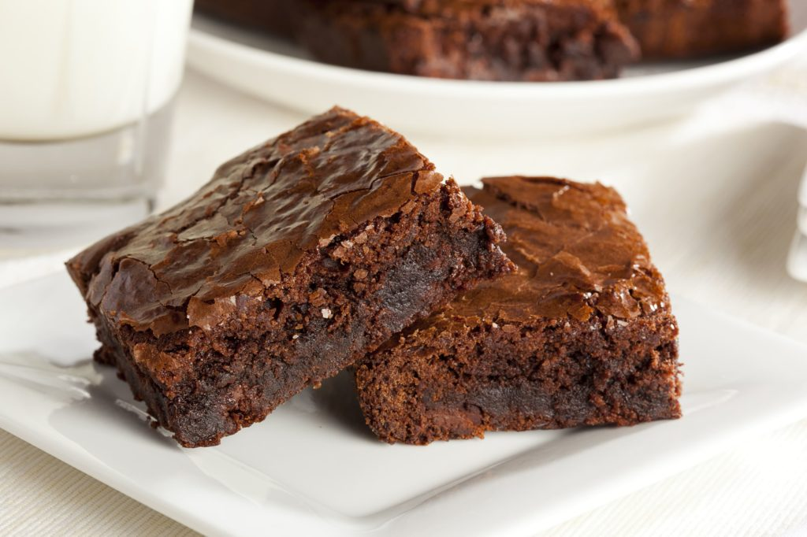

Brownie

Description
The secret to a really great brownie is using both melted chocolate AND cocoa powder, plus butter instead of oil (because butter has way better flavour than oil). The combination of these plus minimal flour, just enough to make a barely-set batter, and brown sugar rather than white (for extra moisture and chewiness) is what will deliver that perfect rich, fudgy brownie you’ve been dreaming about.
Ingredients
- 200g / 14 tbsp unsalted butter
- 200 g / 1 1/4 cups dark chocolate chips
- 1 cup (175g) brown sugar
- 3 eggs
- 1 tsp vanilla extract
- 1/2 cup (75g) plain flour
- 1/4 cup (30g) cocoa powder
- Pinch of salt
- 180g/6oz dark chocolate block/bar (optional)
Steps
- Preheat oven to 180°C/350°F (160°C fan forced).
- Spray a 20cm/8″ square tin with oil and line with baking/parchment paper with overhang
- Place butter and chocolate chips in a heatproof bowl, microwave in 30 second bursts (takes me 1m 30 sec) until melted. Stir until smooth.
- Add sugar and vanilla, mix, then add eggs and mix well until smooth and molten.
- Add flour, cocoa and salt and stir until smooth. Stir in chopped chocolate, pour into pan.
- Bake 24 minutes for really gooey in the centre, 28 minutes for fudgey but still very moist (my favourie, shown in video & photos), 32 minutes for moist fudge-cake-like. (See in post for toothpick testphotos).
- If you didn't use the extra chocolate for stirring in, reduce cook time by 2 minutes.
- Rest for 10 minutes before lifting out of the pan. Allow to cool for at least 20 minutes before cutting. Store in an airtight container for 4 days (bet they don't last that long!) or freeze for 3 months.
Home